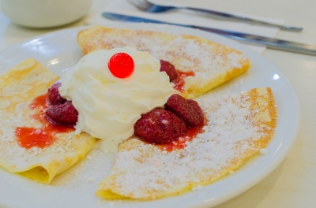

News and Updates
February 2014
Valentines Day is just around the corner, and you know what that means! Our special Lovers of Crepes deal is on all month long: buy one crepe, get a second at 50% off! We are also bringing back our seasonal Sweethearts Crepe with it's pink candy filling and strawerry sauce. Here are some other important notices for the month of February:
- February 3rd: Charity Day! 20% of proceeds of the day's sales will go to this month's charity of choice: Big Brother of Canada!
- February 12: Food Class, entry by donation. All proceeds go to the Vancouver food bank. This time we will make Chocolate Banana Crepes.
- Feruary 14th: Valentines Day! Get 2 free small hot chocolates with the purchase of 4 crepes, what a perfect Valentines date!
- February 25th: Poet Steven Roste will be reading from his new book Full Moon Hearts between 1:00pm and 3:00pm. Tables by donation.
January 2014
Happy new year everyone! Ring in the new year by trying our newest crepe: The Saskwatch. Salmon smokes with maple butter and wrapped in sweet mash potatoes in a crepe. Definitely a must try! Here are our important dates in January:
- January 5th: Charity Day! 20% of proceeds of the day's sales will go to this month's charity of choice: Big Sisters of Canada!
- January 12: Food Class, entry by donation. All proceeds go to the Vancouver food bank. This time we will make Chocolate Strawberry Crepes.
- January 25th: Poet Steven Roste will be reading from his new book Full Moon Hearts between 1:00pm and 3:00pm. Tables by donation.
December 2013
Hohoho, Christmas is almost here! It's time to celebrate with our seasonal Candy Cane Crepe: sweet almond paste with strawberry jam stripes and pepermint sprinkles. Delicious! Please note we are OPEN on Christmas day with holiday hours of 12:00 to 4:00. Here are some special dates to remember in December:
- December 5th: Charity Day! 20% of proceeds of the day's sales will go to this month's charity of choice: Unicef!
- December 12: Food Class, entry by donation. All proceeds go to the Vancouver food bank. This time we will make Chocolate Blueberry Crepes.
- December 25th: Christmas day! Holiday hours will be in effect. Come stope by for complimentary eggnog!
November 2013
Brr, it's getting cold out! Why not warm up with our seasonal favourite: the Hot Chocolate Crepe! Filled with hot fudge and marshmellows, this will be sure to keep you warm on these cold days. We would like to announce that we have a new chef on staff! Please join us in welcoming Winnie Teng, a culinary graduate of the Paris Institue for Culinary Arts. Born and raised in Vancouver, Winnie traveled to France to learn the art of crepe making. Now she returns to BC with a whole bunch of delicious skills she is excited to share with all of you. Look for her behind the counter starting this month! Here are some important dates in November:
- November 5th: Charity Day! 20% of proceeds of the day's sales will go to this month's charity of choice: MADD!
- November 12: Food Class, entry by donation. All proceeds go to the Vancouver food bank. This time we will make Salmon Feta Crepes.